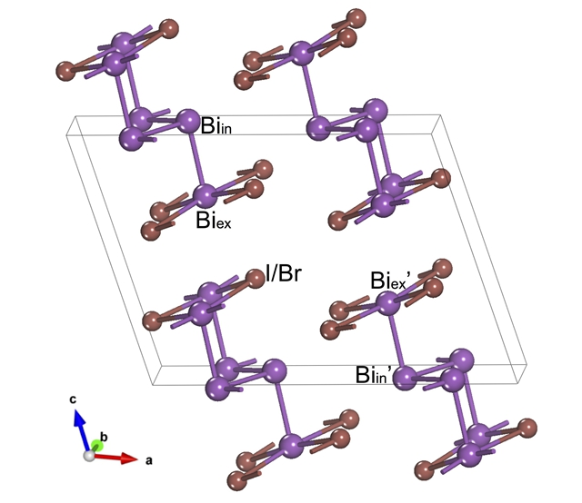
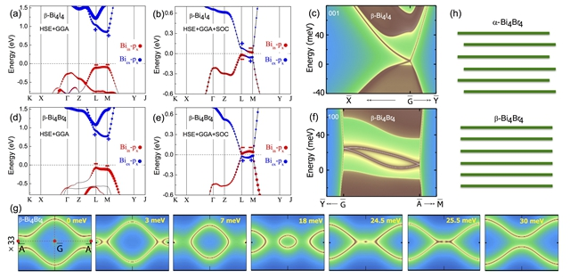

May.31 2016
Abstract While strong topological insulators (STIs) were experimentally realized soon after they were theoretically predicted, a weak topological insulator (WTI) has yet to be unambiguously confirmed. A major obstacle is the lack of distinct natural cleavage surfaces to test the surface selective hallmark of a WTI. With a new scheme, we discover that β−Bi4X4 (X=Br, I), dynamically stable or synthesized before, can be a prototype WTI with two natural cleavage surfaces, where two anisotropic Dirac cones stabilize and annihilate, respectively. We further find four surface-state Lifshitz transitions under charge doping and two bulk topological phase transitions under uniaxial strain. Near the WTI-STI transition, there emerges a novel Weyl semimetal phase, in which the Fermi arcs generically appear at both cleavage surfaces whereas the Fermi circle only appears at one selected surface.
Figure 1 The crystal structure of a conventional cell of β−Bi4X4 (X=Br, I). Biin (Biex) and Bi′in (Bi′ex) atoms are interchanged under spacial inversion and invariant under (010) mirror reflection.
Figure 2 (a),(b) The bulk band structures for β−Bi4I4 without and with the SOC. The size of red (blue) dots indicates the weight of the relevant px orbital of Biin (Biex) atoms; the symbols ± label the parities of the bands at L and M points; the dashed lines are the Fermi levels. (c) The (001) cleave-surface states of β−Bi4I4. (d),(e) The same as (a),(b) but for β−Bi4Br4. (f) The (100) cleave-surface states of β−Bi4Br4 and (g) their Lifshitz transitions. Vertical dimensions in (g) are magnified by 33 times for clarity. (h) The illustration of the stacking orders in α- and β−Bi4Br4. The β (α) phase is a stack of single (double) (001) layers; each layer denoted by a green line is a QSHI.
Figure 3 The topological phase diagrams vs the uniaxial strain along the a axis are depicted in (a) for β−Bi4I4 and (b) for β−Bi4Br4. The corresponding direct gaps at L and M points are shown in (c) for β−Bi4I4 and (d) for β−Bi4Br4. A solid (open) dot denotes a direct (indirect) gap; the minus sign of a gap indicates a band inversion.
Figure 4 (a) Schematic phase diagram of a NI, STI, WSM, WTI, and the novel phase CWSM. The two curves depict the direct gaps near the relevant L and M points. (b) Existence of two open Fermi arcs at the (001) surface of the calculated CWSM. (c) Coexistence of two open Fermi arcs and one closed Fermi circle at the (100) surface of the same CWSM. In (b) and (c), the dimensions have been magnified for clarity.
>> Detail